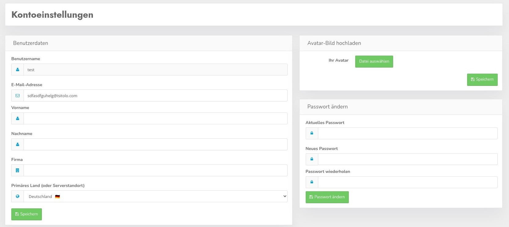

In den Kontoeinstellungen können Sie Ihre E-Mail Adresse, Vor-, Nach- und Firmen-Namen ändern sowie ein neues Passwort anlegen.

Wichtig sind vor allem Benutzername, E-Mail Adresse und Passwort - alle anderen Daten sind derzeit rein kosmetischer Natur.